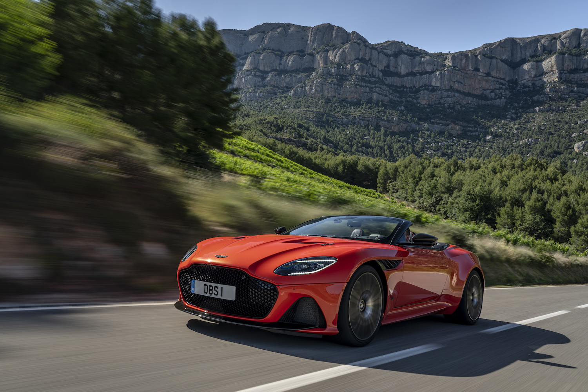
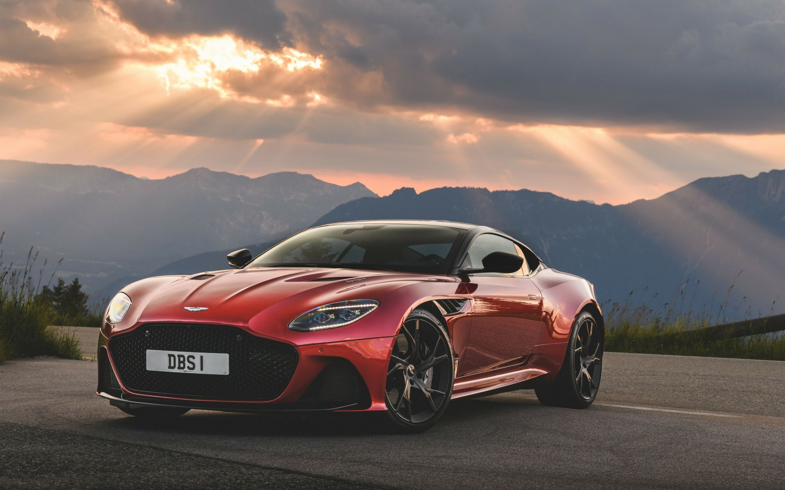
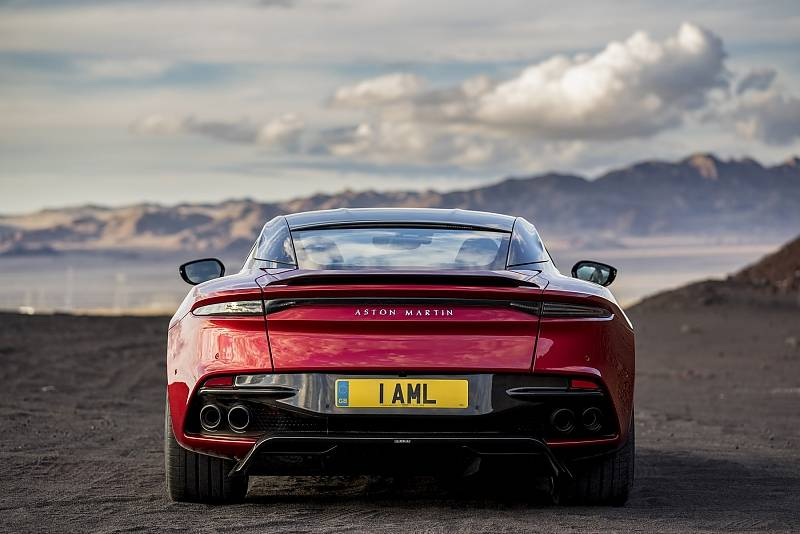

 Yarım yüzyılı aşkın bir süredir, DBS adı sadece bir şey ifade ediyordu: Aston Martin'in nihai üretimi. Bir DBS, Aston Martin'i sadece otomotiv alanındaki en sevilen markalardan biri değil, tüm dünyadaki tüm çaba alanlarında yapan damıtılmış bir konsantredir. Şimdi yeni DBS Superleggera geldi. Güzelliği şüpheye yer bırakmaz. Onun gücü ile mantık edilemez. Şüphesiz, DBS Superleggera Aston Martin üretim aralığının zirvesinde oturuyor. Hem en güzel otomotiv sanatını ifade eden parlayan bir ışık hem de acımasız, kesin bir gücün karanlık ve tehditkar bir gölgesi. DBS Superleggera'yı kesinlikle Aston Martin yapan karşıt özelliklerin bu ince karışımıdır.
 Agresif, ama güzel. Süper hafif, ancak güçlü. Komuta eden bir varlık, ama cömertçe bir tasarım. DBS Superleggera Coupe ve Volante mükemmel bir süper GT deneyimi sunuyor. Sözleşme, biçim ve işlevin çıkarlara karşı olduğunu söylüyor. DBS Superleggera aksini kanıtlıyor. Şekil açıkça Aston Martin, ancak bir stilistin kaprisinde değil, şimdiye kadarki en güçlü üretimi Aston Martin'i soğutmak ve kontrol etmek için her zamankinden daha güçlü, daha geniş ve daha kaslı.
 DBS Superleggera, sınırsız bir güç hissi ile en doğal güzelliği birleştiren nefes kesen bir altıgen ızgaraya sahiptir. Bu, güçlü 715bhp motorun oksijen için doyumsuz iştahını eşzamanlı olarak beslerken tüm araba için görsel gündemi belirler. Başkalarının durduğu yerde başlıyoruz. DBS Superleggera'nın görkemli, deri döşemeli iç kısmına oturun ve yüksek performanslı koltuklarımızın vücudunuzu mükemmelliğe nasıl desteklediğini görün. Hem sürücü hem de yolcu koltuğunda, yolculuk başlamadan önce evdesiniz.
Copyright © Sertan Mangan 2020